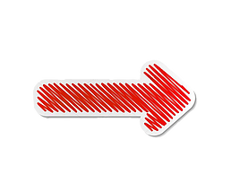

풋살 포지션에서 가장 전방에 서는 선수로 공격적인 역할을 한다. 플레이 성향에 따라 ‘클래식 피보’와 ‘가짜 피보’로 나누어진다. 클래식 피보는 피지컬이 좋고 공을 잘 소유하는 선수로 아라(ALA)와의 연계를 잘 한다. ‘가짜 피보’는 축구에서 펄스 나인(False 9)과 유사하다. 피보 포지션이지만 그 자리에 국한되지 않은 플레이를 한다.
쉽게 말하면 축구의 윙어 역할이다. 양 사이드에 위치하며 상대 수비를 흔드는 역할, 공격과 수비를 연결하는 역할을 한다. 하지만 풋살에서는 수비 가담도 많이 해야 하기 때문에 활동량 많은 선수들에게 적합하다.
필드 플레이어 중 가장 아래에 서는 선수를 픽소라고 한다. 픽소는 경기를 넓게 볼 줄 알아야 하고 볼 운반/배급을 잘해야 한다. 골대 앞에 위치하기 때문에 당연히 수비력이 좋아야 한다.
풋살에서 골대를 지키는 역할을 한다. 축구에서는 골키퍼라고 하지만 풋살에서는 골레이로라고 한다.